![]()
library(readxl)
dat <- read_xlsx("data/adcom.xlsx")Inferenza statistica
ADCOM 2025-2026
Ultimo aggiornamento: 04-02-2026
Inferenza, the big picture

Inferenza
L’inferenza è un aspetto legato al concetto di stima. L’inferenza riguarda un processo decisionale rispetto ad un parametro stimato.
Fare inferenza quindi significa prendere una decisione basandosi su una o più stime campionarie di parametri. Essendo l’inferenza basata su stime, la decisione inferenziale ha, per definizione, una componente d’errore.
In altri termini, quando si prende una decisione inferenziale (e.g., il trattamento funziona di più nel gruppo sperimentale, la correlazione è diversa da zero, etc.) è sempre necessario essere consapevoli della componente d’errore.
Approcci di inferenza statistica
L’inferenza statistica è caratterizzata sia storicamente ma anche attualmente da approcci diversi che possiamo riassumere in:
- Approccio Fisheriano
- Approccio di Neyman & Pearson
- Approccio basato sulla Likelihood (verosimiglianza)
- Approccio Bayesiano
Diciamo che in Psicologia, viene utilizzato un ibrido tra l’approccio Fisheriano e quello di Neyman & Pearson chiamato Null Hypothesis Significance Testing (NHST) e in minoranza l’approccio Bayesiano.
Per approfondire [#extra]
Per approfondire i problemi legati all’inferenza in Psicologia:
Gigerenzer, G. (1993). The Superego, the Ego, and the Id in Statistical Reasoning. In A Handbook for Data Analysis in the Behaviorial Sciences. Psychology Press. https://doi.org/10.4324/9781315799582
Gigerenzer (1993)
Gigerenzer, G. (2018). Statistical rituals: The replication delusion and how we got there. Advances in Methods and Practices in Psychological Science, 1, 198–218. https://doi.org/10.1177/2515245918771329
Gigerenzer (2018)
Errore di stima
Errore di stima
Il concetto principale per capire l’inferenza è quello di errore di stima. Possiamo distinguere due tipologie principali di errori di stima:
- errore sistematico: la mia stima è sistematicamente minore o maggiore rispetto al valore vero (parametro) che voglio stimare
- errore casuale: la mia stima è in media corretta ma qualche volta risulta maggiore, qualche volta minore in modo casuale
Tendenzialmente quando si analizzano dati, si cerca di usare metodi che evitino l’errore di tipo sistematico e riducano il più possibile quello casuale. Quando abbiamo detto che la misurazione (o stima) di qualcosa è \(D = M + E\) (dati osservati = modello + errore), l’errore \(E\) che consideriamo è di tipo casuale.
Errore di stima
Possiamo dire che il valore atteso (la media) in caso di errore casuale è zero mentre negli altri casi no.
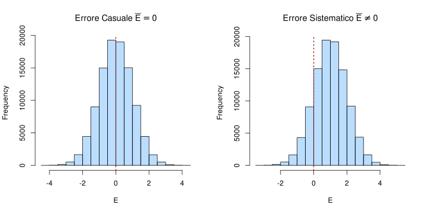
Le 3 distribuzioni
In tema inferenza è facile confondere i piani. Ogni volta che facciamo inferenza dobbiamo tenere a mente 3 tipologie di distribuzioni chiaramente distinte:
- La popolazione: l’insieme completo di tutti gli elementi, detti unità statistiche definita da parametri ignoti
- Distribuzione dei dati (campione): un sottoinsieme estratto dalla popolazione dove calcoliamo le statistiche
- Distribuzione campionaria: distribuzione che descrive l’incertezza nella stima di un parametro della popolazione tramite una statistica calcolata su un campione.
Ora vedremo chiaramente questi concetti.
Dataset
Per capire al meglio il concetto di errore standard, facciamo un esempio con dei dati veri. Usiamo i dati del questionario fatto il primo giorno.
Trovate il dataset su Moodle o su https://stat-teaching.github.io/adcom/#data.
Qui trovate lo script R usato a lezione per illustrare la distribuzione campionaria: https://stat-teaching.github.io/adcom/scripts/
Dataset
Stima, popolazione e campione
Ritornando a parametri e statistiche, ogni statistica è una stima (con errore) del rispettivo parametro della popolazione.
Quando calcoliamo una media, una deviazione standard, etc. su un campione ricordiamoci sempre che, in ottica di stima, c’è una quota di incertezza. In modo generico definiamo \(\theta\) come il parametro incognito che stiamo stimando e \(t\) la sua stima fatta sul campione.
L’errore di stima ovvero una quantità che determina la precisione con cui \(t\) è una stima di \(\theta\) viene definita errore standard.
Errore standard
Più formalmente ed in modo generico, possiamo dire che l’errore standard di una statistica è:
\[ SE = \sqrt{\frac{\sigma^2}{n}} = \frac{\sigma}{\sqrt{n}} \]
Sostanzialmente quindi l’errore standard dipende dalla variabilità intrinseca di un fenomeno \(\sigma^2\) e dal numero di osservazioni \(n\) utilizzate per stimare questo fenomeno.
Errore standard
Facciamo un esempio. Se prendiamo due variabili del nostro dataset e vediamo la variabilità (con coefficiente di variazione):
[1] 0.0577459[1] 0.8430582Vediamo che la variabilità del numero di caffè bevuti è molto maggiore rispetto al numero di scarpe. Quindi, a parità di campione, la stima del numero di caffè bevuti sarà sempre più incerta. Tuttavia, aumentando il denominatore (\(n\)) possiamo diminuire il nostro errore casuale facendo variare meno la stima. Questo rapporto tra variabilità e numerosità è fondamentale per capire la qualità delle stime.
Errore standard della media
Abbiamo visto dallo script che l’errore standard della media si calcola (esattamente) così come la formulazione generica:
\[ SE = \sqrt{\frac{\sigma^2}{n}} = \frac{\sigma}{\sqrt{n}} \]
Ovviamente \(\sigma^2\) (la varianza della popolazione) viene stimata anch’essa dal campione. E’ importante capire che ogni statistica ha un suo errore standard che segue sempre questa logica. Le formule possono essere diverse (e non è necessario saperle) ma è sempre un rapporto tra varianza del fenomeno e numero di osservazioni usate per la stima.
Errore standard, nella pratica
A cosa serve l’errore standard nella pratica? Fondamentalmente a due processi:
- quantificare e quindi comunicare l’errore di stima di un certo parametro stimato con un campione
- prendere una decisione inferenziale riguardo il parametro, partendo dalla stima fatta sul campione. Non prendiamo una decisione sul campione (quello è noto, non incerto) ma sul parametro della popolazione.
Distribuzione campionaria
L’errore standard è anche la deviazione standard della distribuzione che si ottiene applicando una certa statistica \(t\) a tutti i campioni possibili.
Questa distribuzione si chiama distribuzione campionaria e contiene tutta l’informazione necessaria per quantificare l’incertezza di stima. Tendenzialmente:
- la media di \(t\) applicata a tutti i campioni possibili coincide con \(\theta\)
- la deviazione standard di \(t\) applicata a tutti i campioni possibili rappresenta l’errore standard.
Chiaramente la stima in questo caso non ha errore sistematico (altrimenti 1 non sarebbe vero).
Distribuzione campionaria
Possiamo indicare in modo generico la distribuzione campionaria di una statistica \(t\) come:
\[ t \sim \mathcal{D}(\boldsymbol{\nu}) \]
Dove \(\sim\) significa distribuita come, \(\mathcal{D}\) è una certa distribuzione (esempio la Normale) e \(\boldsymbol{\nu}\) è un vettore di uno o più parametri (nel caso della Normale, \(\mu\) e \(\sigma\)).
Questa formulazione generica è solo utile a chiarire che il concetto di distribuzione campionaria è lo stesso ma \(\mathcal{D}\) può essere diverse cose. Nel t-test, ad esempio, \(\mathcal{D}\) è una t di Student.
Teorema del limite centrale
In alcuni casi, vale un teorema che si chiama teorema del limite centrale (TLC). Il teorema dice che con una numerosità campionaria sufficientemente grande1, la distribuzione campionaria di una statistica si può approssimare come una Normale:
\[ t \sim \mathcal{N}(\theta, \mbox{SE}_t) \]
Questo si legge come:
La distribuzione campionaria di \(t\) (una statistica generica, e.g., media) è distribuita come (\(\sim\)) una Normale con media \(\theta\) (il parametro) e deviazione standard l’errore standard.
Teorema del limite centrale
In particolare, nell’esempio pratico con i dati del corso abbiamo visto che il TLC vale e ci dimostra come la distribuzione campionaria della media sia distribuita come:
\[ \bar{x} \sim \mathcal{N}(\mu, \text{SE}_{\bar{x}}) \]
Dove \(\mu\) è la media vera della popolazione e \(\text{SE}_{\bar{x}}\) l’errore standard della stima della media ovvero \(\text{SE}_{\bar{x}} = \sigma / \sqrt{n}\) (\(s\) viene usato come stima di \(\sigma\)).
Intervallo di confidenza
Un ultimo concetto importante è quello di intervallo di confidenza (CI). Una volta compresa la distribuzione campionaria, l’intervallo di confidenza non è altro che un modo di riassumerla, oltre che con la media ma soprattutto con l’errore standard.
Formalmente, l’intervallo di confidenza si calcola come:
\[ \mbox{CI} = t \pm q \times SE_t \]
\(t\) è la stima, \(SE_t\) è l’errore standard. \(q\) è un moltiplicatore dell’errore standard. \(q\) non è altro che il quantile associato ad una certa probabilità cumulata.
Intervallo di confidenza
Per capire \(q\) dobbiamo ripensare alla normale (dato il TLC). In particolare alla distribuzione normale standard (\(\mu = 0\) e \(\sigma = 1\)):

Intervallo di confidenza
Ogni distribuzione (normale) può essere convertita alla normale standard tramite la standardizzazione. Ad esempio, una normale con \(\mu = 100\) e \(\sigma = 15\):

Intervallo di confidenza
Quindi ad esempio, un valore \(q = 2\) corrisponde a \(x = \mu + q \sigma = 100 + 2 \times 15 = 130\):
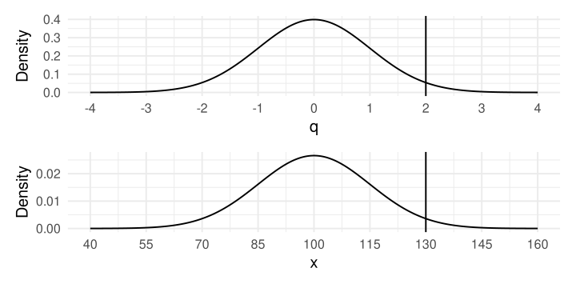
Intervallo di confidenza
Ora, esattamente come per i quantili (\(q\) sono quantili infatti) possiamo sapere quale \(q\) è associato ad una certa probabilità cumulata. Solitamente l’intervallo di confidenza si riporta al 95%. Dobbiamo trovare \(q\) che è associato a \(1 - 0.95 = 0.05\) di probabilità cumulata. Distribuiamo il 0.05 tra le due code simmetriche della normale.
Con \(q\) di ~1.96 abbiamo una probabilità cumulata (a destra di \(q\) e a sinistra di \(-q\)) del 2.5%.
Intervallo di confidenza
Vediamolo sul grafico, evidenziamo l’area.
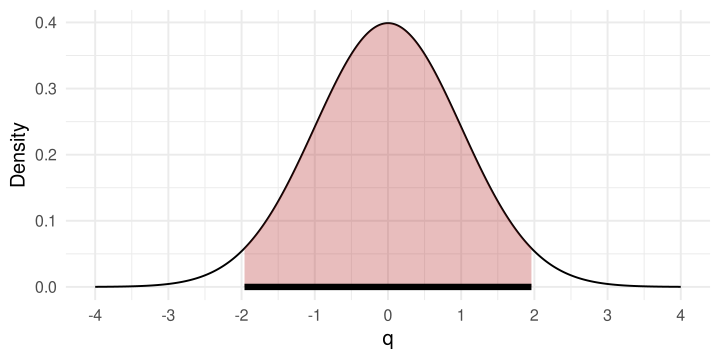
Intervallo di confidenza
Tornando al nostro esempio pratico, il CI è l’intervallo sulla distribuzione campionaria che contiene una certa percentuale (e.g., 95%) di valori.
Più formalmente:
L’intervallo di confidenza al \(p\%\) è quell’intervallo che, se ripetessi la misurazione un numero infinito di volte e calcolassi l’intervallo di confidenza, il \(p\%\) delle volte l’intervallo conterrebbe il valore vero \(\theta\).
Prendiamo una decisione
Fino ad ora abbiamo quantificato l’incertezza nella stima di un parametro usando lo standard error e l’intervallo di confidenza. Ora possiamo provare a prendere una decisione inferenziale.
Ad esempio, immaginiamo di conoscere l’altezza media della popolazione generale italiana \(\mu_p = 163\). Raccogliamo un campione e ci vogliamo chiedere se la popolazione da cui proviene il campione abbia una media uguale o diversa da \(\mu_p = 163\). Possiamo definire due mondi distinti:
- Mondo nullo dove la popolazione generale e quella da cui è estratto il campione hanno la stessa media. \(\mu_p = \mu_c = 163\).
- Mondo alternativo dove la popolazione generale e quella da cui è estratto il campione hanno medie diverse \(\mu_p \neq \mu_c\).
Prendiamo una decisione
Quello che possiamo fare è prendere un campione di numerosità \(n\), calcolare l’altezza media e cercare di inferire cosa succede a livello della popolazione. Selezioniamo casualmente un campione dal dataset1:
Prendiamo una decisione
Più formalmente abbiamo abbozzato un sistema di verifica d’ipotesi. Abbiamo definito un’ipotesi nulla:
\[ H_0: \mu_p = \mu_c \quad\quad \mu_p - \mu_c = 0 \]
E anche un’ipotesi alternativa \(H_1\):
\[ H_1: \mu_p \neq \mu_c \quad\quad \mu_p - \mu_c \neq 0 \]
In questo caso \(H_1\) dice semplicemente che le due medie sono diverse, non fa riferimento alla direzione maggiore o minore. Questa è un’ipotesi alternativa bidirezionale.
Prendiamo una decisione
Calcoliamo le statistiche sul campione:
Normale, disclaimer
Una precisazione riguarda utilizzare la distribuzione campionaria Normale. In realtà, quando si utilizza \(s\) come stima di \(\sigma\) (il nostro caso) è necessario utilizzare la distribuzione \(t\) di Student.
L’idea è dovendo stimare sia \(\mu\) (la media della popolazione) con \(\bar{x}\) che \(\sigma\) (la deviazione standard della popolazione) con \(s\) abbiamo più incertezza che assumere \(\sigma\) come nota.
Per tenere conto di questa incertezza utilizziamo una distribuzione campionaria più conservativa rispetto alla Normale, ovvero la \(t\) di Student.
Normale, disclaimer
Mentre la Normale (quella standard) è fissa una volta definiti \(\mu\) e \(\sigma\), la \(t\) di Student può variare in funzione di un’altro parametro \(\nu\) ovvero i gradi di libertà.
I gradi di libertà sono un concetto complesso ma fondamentale. L’idea è che ogni volta che stimiamo un parametro ad esempio la media \(\mu\) usiamo (e quindi spendiamo) informazione dal campione di numerosità \(n\).
Nel caso del nostro esempio, noi stimiamo la media con \(\bar{x}\) e anche la deviazione standard \(s\) (che dipende dalla media). Quindi abbiamo \(\nu = n - 1\) gradi di libertà.
Normale, disclaimer
Vediamolo con un esempio piccolo, immaginiamo di avere 5 valori e calcolare la media:
Sappiamo che \(\sum^{n}_{i = 1} x_i - \bar{x} = 0\):
Normale, disclaimer
Ora, se immaginiamo di sapere che \(\sum^{n}_{i = 1} x_i - \bar{x} = 0\) e vi dicessi il valore dei primi 4 scarti dalla media:
[1] -1 0 1 -2[1] -2L’ultimo valore (il quinto, \(n - 1\)) è vincolato. Deve essere per forza \(x_5 - \bar{x} = 2\). Si sono ridotti i gradi di libertà nel momento in cui abbiamo stimato la media.
Normale, disclaimer
Qui vediamo delle \(t\) di Student con \(\nu\) diversi e poi la Normale. Come vedete, all’aumentare di \(\nu\) le due sono sempre più simili.

Prendiamo una decisione
Tornando al nostro campione e assumendo la normalità possiamo visualizzare la distribuzione campionaria. In blu vediamo l’intervallo di confidenza al 95%.

Prendiamo una decisione
Cosa notiamo?
- la media del campione \(\bar{x}\) (che è una stima di \(\mu_c\)) è diversa da \(\mu_p\) (ovviamente)
- la distribuzione campionaria costruita attorno a \(\bar{x}\) ci fa capire che l’ipotesi \(H_0\) è poco probabile. Infatti \(\mu_p = 163\) è un valore che è sulle code estreme della distribuzione.
- questo è chiaro anche guardando l’intervallo di confidenza. Il valore \(\mu_p\) è ampiamente fuori dall’intervallo. Possiamo dire che la probabilità di ottenere valori minori o uguali a \(\mu_p\) è minore di \(1 - 0.95\) quindi minore di \(0.05\).
Prendiamo una decisione
Ora ribaltiamo il discorso. Immaginiamo di costruire la stessa distribuzione campionaria ma assumendo come vera \(H_0\). L’idea è la stessa, semplicemente la distribuzione sarà centrata su \(\mu_p\).

Prendiamo una decisione
Perchè fare questo? Perchè \(H_0\) e quindi \(\mu_p = 163\) è definita (nota come nel caso di un punteggio normativo o assunta). Possiamo quindi assumerla come vera e vedere la consistenza dei dati rispetto a questa ipotesi.
Siccome siamo in grado di lavorare con le distribuzioni normali (teoriche), possiamo ad esempio calcolare la probabilità assumendo \(H_0\) come vera, di avere un campione con \(\bar{x}\) maggiore o minore (ricordate la bidirezionalità) rispetto a quella osservata.
Questa probabilità che abbiamo calcolato, si chiama p value.
Prendiamo una decisione
Graficamente possiamo chiaramente vederlo:
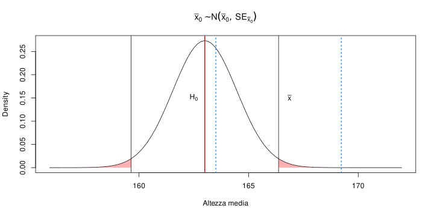
Statistica test
Nel nostro esempio, stiamo lavorando con la media \(\bar{x}\) del campione e la media della popolazione \(\mu_p\) assumendo \(H_0\) come vera.
C’è un modo più intuitivo di lavorare e riguarda sempre la standardizzazione. Proviamo a standardizzare la nostra \(\bar{x}\) usando la distribuzione campionaria. Calcoliamo una nuova statistica che chiamiamo genericamente \(t\):
\[ t = \frac{\bar{x} - \mu_p}{\text{SE}_{\bar{x}}} \]
La \(t\) non è altro che la differenza tra la media del campione e quella della popolazione (sotto \(H_0\)) standardizzata con l’errore standard. E’ quindi espressa in unità di errore standard.
Statistica test
Nel nostro caso quindi possiamo facilmente calcolarla. L’interpretazione è come un punto \(z\) ma siamo in unità di errore standard e non di deviazione standard.
Quindi il nostro campione è ~2.3 errori standard maggiore rispetto alla media della popolazione se fosse vera \(H_0\). 2.3 è un valore decisamente grande e ci suggerisce che la media sia abbastanza distante dall’ipotesi nulla.
Prendiamo una decisione
Il vantaggio è che, a prescindere da \(\bar{x}\) e \(\mu\), questa statistica test standardizzata ha sempre la stessa distribuzione campionaria. Assumendo la normalità, questa diventa una distribuzione normale standard:
\[ t \sim \mathcal{N}(0, 1) \]
Se usassimo la distribuzione \(t\) di Student (lasciamola stare per il momento) allora:
\[ t \sim \mathcal{T}(\nu) \]
Dove \(\nu = n - 1 = 29\)
Prendiamo una decisione
Vediamo la distribuzione campionaria in questo caso.

Prendiamo una decisione
Possiamo calcolare il nostro p-value con la stessa logica ma ora possiamo fare riferimento direttamente alla distribuzione normale standard:
La cosa utile è che possiamo esprimere tutto in termini di normale standard.
Errori decisionali
Quello che abbiamo fatto artigianalmente è un processo inferenziale:
- Abbiamo definito un’ipotesi nulla \(H_0\) (\(\mu_0 = 163\), popolazione).
- Basandoci su \(n\) e su \(s\) del campione abbiamo costruito la distribuzione campionaria (assumendo che \(H_0\) sia vera)
- Abbiamo calcolato la probabilità di trovare un risultato uguale o maggiore di quello campionario, ovvero il p value.
Possiamo intuire che tanto più il p value è piccolo tanto più il risultato del campione è sorprendente assumendo \(H_0\) come vera. Ma quanto piccolo deve essere il p value per rifiutare \(H_0\)?
Errori decisionali
Prendiamo una soglia che chiamiamo \(\alpha\). Questa soglia determina la nostra decisione. Se il p-value è minore di \(\alpha\) prendiamo una decisione, altrimenti no.
In termini pratici:
- Rifiutiamo \(H_0\) quando \(p \leq \alpha\)
- Non rifiutiamo \(H_0\) quando \(p > \alpha\)
Il non rifiutiamo è importante perchè stiamo assumendo \(H_0\) come vera. Possiamo solo dire che i nostri dati sono poco consistenti con \(H_0\).
Errori decisionali
Dove stanno possibili errori? Riprendiamo la distribuzione campionaria:

\(\alpha\) p value e valore critico
Un’altro modo di prendere la stessa decisione è quello di usare i valori critici e non \(\alpha\). Se ci pensate, \(\alpha\) è una probabilità cumulata che quindi è associata ad un certo quantile (i nostri \(t\)).
L’area grigia che rappresenta una probabilità di \(\alpha\) (0.05 in questo caso) è associata ad un certo valore di \(t\). Questo valore si chiama valore critico. In R si calcola con qnorm()1
\(\alpha\), p value e valore critico
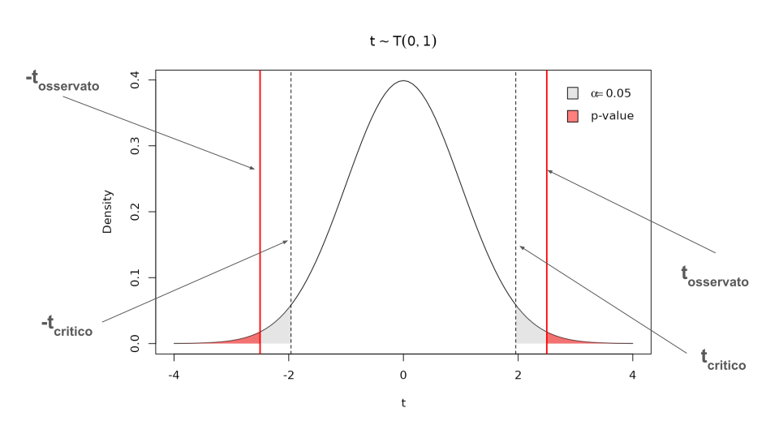
\(\alpha\), p value e valore critico
Quindi dire che \(p \leq \alpha\) è equivalente a dire che \(t_{\text{oss}}\) (osservato) è maggiore di \(t_{\text{crit}}\) (critico). \(t_{\text{crit}}\), nella normale standard dipende solo da \(\alpha\).
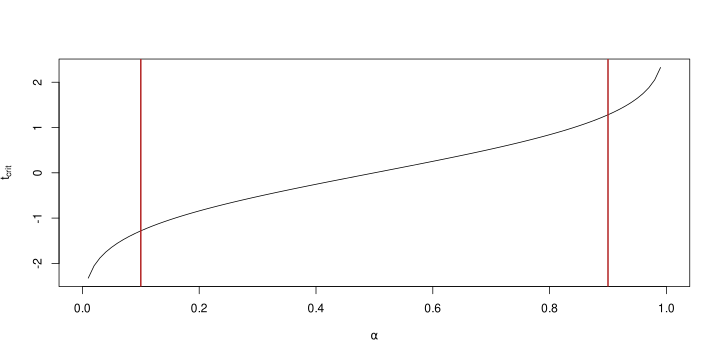
\(\alpha\) p value e valore critico
Siccome valori \(\alpha > 0.1\) sono poco probabili, facciamo zoom sul grafico:
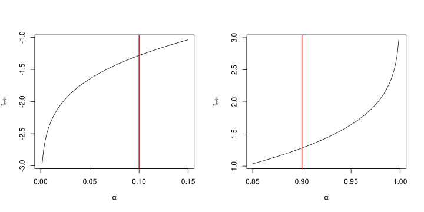
\(\alpha\) p value e intervallo di confidenza
Un ultimo modo per prendere la decisione (esattamente equivalente) è quello di basarsi sull’intervallo di confidenza costruito attorno alla stima \(\bar{x}\).
Se l’intervallo di confidenza contiene il valore sotto \(H_0\) equivale a dire che il p value è maggiore di \(\alpha\) e il valore maggiore è minore del valore osservato.
\(\alpha\) p value e intervallo di confidenza
\(\alpha\) e intervallo di confidenza sono legati. Se \(\alpha = 0.05\) l’intervallo di confidenza è a livello \(1 - \alpha\).
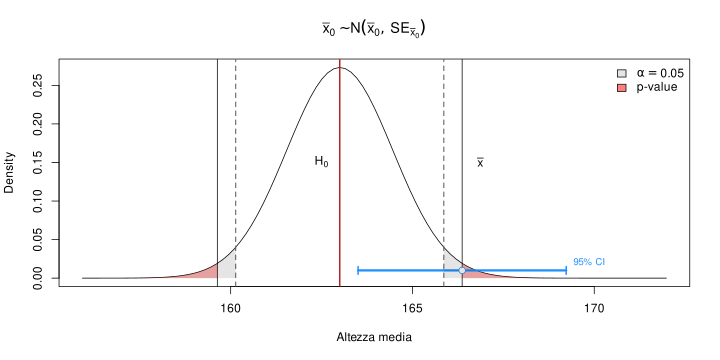
Test monodirezionali e bidirezionali
Questa distinzione è fondamentale nel momento in cui costruiamo un test per la verifica d’ipotesi. Il punto è che una volta deciso \(\alpha\) questo deve essere indipendente dal tipo di test.
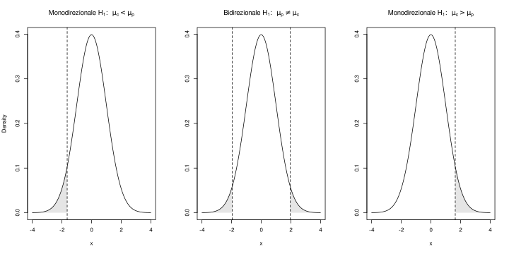
Test monodirezionali e bidirezionali
Il grafico ci fa capire che anche il valore critico cambia in base al test. Essendo \(\alpha\) fisso, spartire \(\alpha\) tra due code o metterlo tutto in una coda fa aumentare o diminuire il valore critico. Possiamo farlo anche in R:
Test monodirezionali e bidirezionali
Emergono diverse cose:
- il valore critico espresso con la statistica test \(t\) è simmetrico rispetto allo zero (ovviamente)
- il valore critico per un’ipotesi monodirezionale è più piccolo rispetto a quello bidirezionale
- a parità di \(\text{SE}\) e \(\bar{x}\) è più probabile rifiutare \(H_0\) all’interno di un test monodirezionale.
Dal punto di vista teorico, la direzione del test è funzione di quello che sappiamo sul fenomeno. Il test bidirezionale non richiede di esplicitare la direzione ma è più conservativo e quindi penalizza la nostra mancanza di informazioni.
Errori decisionali
Nel nostro caso il p value è minore di \(\alpha\). Ma nonostante questo, essendo che stiamo assumendo \(H_0\) come vera, anche valori che sono associati ad un p value \(< \alpha\) sono comunque possibili (i.e., probabilità \(> 0\)).
In termini pratici significa che, nonostante il mio campione sia sulle code della distribuzioni campionaria, comunque proviene da quella popolazione.
Quindi potrei rifiutare \(H_0\) perchè la mia soglia decisionale è stata passata ma prendere la decisione sbagliata nel caso \(H_0\) sia effettivamente vera.
Questo si chiama errore di primo tipo o falso positivo.
Errori decisionali
C’è solo questo tipo di errore? Rifiutare \(H_0\) quando questa è vera? No, ci sono anche altri tipi di errore. Ci serve però spostarci nell’altro mondo ovvero quello dove \(H_0\) è effettivamente falsa e \(H_1\) è vera.
Inoltre, non basta definire \(H_1\) come maggiore, minore o diverso ma dobbiamo definire un valore puntuale che il parametro assume in questo altro mondo.
\[ \begin{aligned} H_0: \mu_p &= \mu_c = 163 \quad \quad \mu_c - \mu_p = 0 \\ H_1: \mu_c &= 165 \end{aligned} \]
Stiamo ipotizzando che, se \(H_0\) è falsa allora il nostro campione proviene da una popolazione con media \(\mu_c = 165\).
Errori decisionali
Avendo due ipotesi con valori puntuali che possiamo assumere come vere in modo alternato (sono mutuamente esclusive) possiamo anche costruire:
- distribuzione campionaria della statistica test quando \(H_0\) è vera (e quindi \(H_1\) è falsa)
- distribuzione campionaria della statistica test quando \(H_1\) è vera (e quindi \(H_0\) è falsa)
Entrambe le distribuzioni campionarie avranno \(\text{SE}\) come deviazione standard ma saranno centrate su valori diversi come media.
Errori decisionali
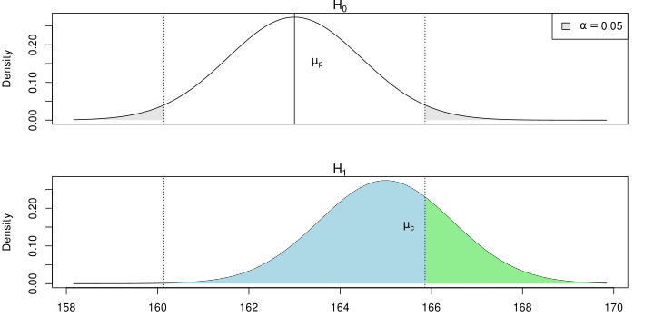
Errori inferenziali
Quindi:
- L’area rappresenta la probabilità di rifiutare \(H_0\) quando questa è vera. Questa è chiamato errore di primo tipo o \(\alpha\)
- L’area rappresenta la probabilità di non rifiutare \(H_0\) quando questa è falsa. Questa è chiamato errore di secondo tipo o \(\beta\)
- L’area rappresenta la probabilità di rifiutare \(H_0\) quando questa è falsa. Questa è chiamata potenza statistica o \(1 - \beta\)
Errori inferenziali
Quindi possiamo riassumere questo sistema in una tabella di contingenza 2x2:

Errori inferenziali e potenza
Potete trovare una visualizzazione interattiva di queste probabilità a questo link:
https://stat-teaching.github.io/statshiny/shiny/inference.html
Esempio con Di Marco et al. (2020)
Lavoriamo con il solito dataset Di Marco et al. (2020):
id age gender education status residence period age_cat period_cat
1 1 53 male high_school 2 south 31 51-60 >31
2 2 60 male degree 2 north 27 51-60 21-30
3 3 40 female degree 2 north 13 31-40 11-15
4 4 57 male degree 2 north 20 51-60 16-20
5 5 60 male high_school 2 north 20 51-60 16-20
6 6 46 male degree 2 north 14 41-50 11-15
attachment needs bonds perc_collective_efficacy perc_self_efficacy family
1 3.67 3.33 3.33 3.2 3.11 3.75
2 4.00 3.33 4.00 4.2 3.95 5.00
3 4.00 2.67 3.50 3.8 3.58 4.25
4 4.00 4.00 3.50 3.6 3.74 4.25
5 3.33 3.00 3.33 3.4 3.53 4.00
6 4.00 3.33 3.33 4.2 3.63 5.00
friends organization burnout trauma satisfaction extrinsic intrinsic quest
1 4.00 4.00 1.8 2.11 4.0 2.75 6.00 1.67
2 4.25 3.25 1.4 0.60 3.5 4.75 6.50 1.00
3 4.50 4.50 2.7 2.30 3.6 5.75 5.50 5.00
4 4.50 4.50 1.9 1.80 3.0 4.50 7.00 2.75
5 3.25 3.75 2.6 2.30 2.7 4.25 3.75 4.50
6 5.00 4.75 2.1 1.30 2.6 4.75 7.00 1.25
desiderability
1 3.86
2 4.00
3 4.00
4 3.14
5 3.86
6 3.57Esempio con Di Marco et al. (2020)
Quello che abbiamo fatto fino ad ora si chiama test ad un campione. Ovvero abbiamo un campione di numerosità \(n\) che viene confrontato con una popolazione con una certa media \(\mu\).
Lavoriamo con i punteggi di perc_self_efficacy e ipotizziamo che la media normativa di questi punteggi sia \(\mu = 3.5\).
Vogliamo stimare la media del campione, quantificare l’incertezza e testare se questo campione sia consistente con la popolazione di riferimento.
Esempio con Di Marco et al. (2020)
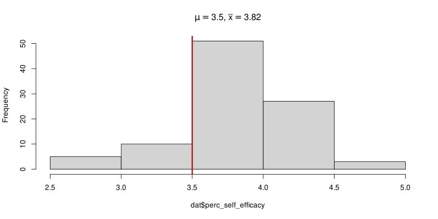
Esempio con Di Marco et al. (2020)
Facciamo quello che già sappiamo:
Esempio con Di Marco et al. (2020)
Chiaramente il p value in questo caso è molto piccolo essendo la statistica test decisamente poco consistente con la distribuzione campionaria.
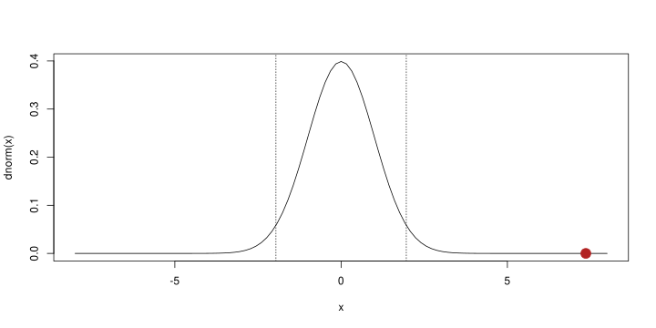
Test a 2 campioni
Un test più comune di quello ad un campione è quello dove si confrontano due campioni. La logica è la stessa:
- Definiamo \(H_0\) e \(H_1\)
- Definiamo la statistica test
- Definiamo la distribuzione campionaria assumendo \(H_0\) come vera
- Calcoliamo il p value
Test a 2 campioni
Vogliamo vedere l’effetto di education su perc_self_efficacy. Quindi abbiamo due campioni di numerosità \(n_h\) e \(n_d\) (high school e degree).
\[ H_0: \mu_{\text{h}} = \mu_{\text{d}} \quad \mu_{\text{h}} - \mu_{\text{d}} = 0 \]
\[ H_1: \mu_{\text{h}} \neq \mu_{\text{d}} \quad \mu_{\text{h}} - \mu_{\text{d}} \neq 0 \]
Quindi, stiamo facendo inferenza sulle popolazioni da cui provengono i due campioni. L’ipotesi nulla è che i due campioni provengano da una popolazione con la stessa media, e quindi che non ci siano differenze.
Test a 2 campioni
Vediamo i dati per prima cosa, togliamo le osservazioni con sec_school così abbiamo 2 gruppi:
Test a 2 campioni
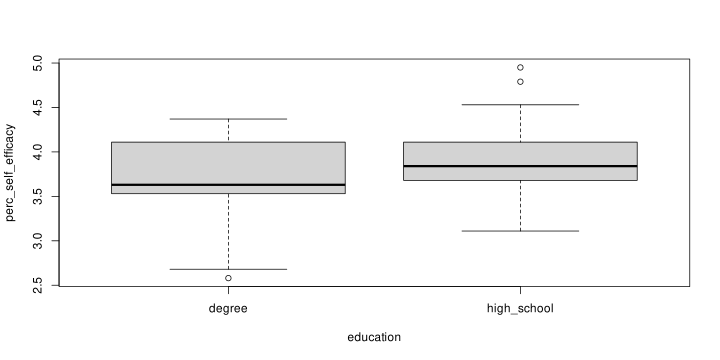
Test a 2 campioni
Vediamo anche un grafico con le medie (rombi) e i singoli punti:
degree high_school
3.720976 3.912800 Test a 2 campioni
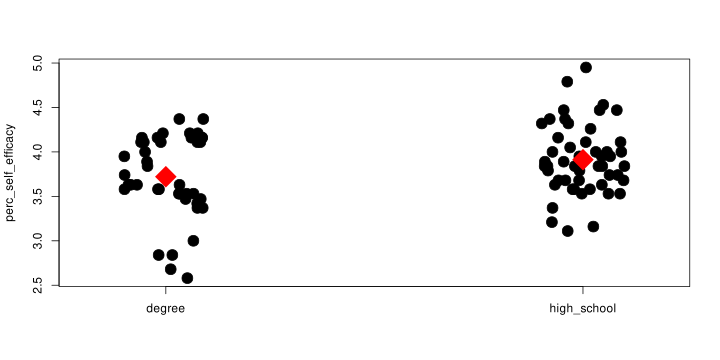
Test a 2 campioni
Per quanto riguarda la statistica test, il discorso è leggermente più complesso. Rispetto al caso ad un campione, qui stiamo ragionando su una differenza tra due medie (e non una media vs un valore). Quindi la statistica test è una differenza:
\[ \begin{aligned} \zeta = \mu_h - \mu_d \\ b = \bar{x}_{d} - \bar{x}_h \end{aligned} \]
Dove \(\zeta\) è il parametro differenza tra medie e \(b\) la sua stima al livello del campione. Dobbiamo quindi calcolare l’errore standard di \(b\).
Test a 2 campioni
La formula è più complessa di quella di una singola media ma la logica è la stessa. Ricordo che l’errore standard quantifica l’incertezza di stima combinando variabilità del fenomeno e numerosità campionaria. In questo caso abbiamo una doppia incertezza legata alla stima di due medie. Quindi:
\[ \text{SE}_{b} = \sqrt{\frac{s^2_{d}}{n_d} + \frac{s^2_{h}}{n_h}} \]
Sostanzialmente sommiamo l’incertezza nella stima di entrambe le medie.
Test a 2 campioni
Assumendo che \(\sigma^2_d = \sigma^2_h\) possiamo usare \(s_p\) (\(p\) per pooled/combinata) calcolata come:
\[ s_p = \sqrt{\frac{s^2_d (n_d - 1) + s^2_h (n_h - 1)}{n_d + n_h - 2}} \]
Questa è una media pesata delle due varianze che viene calcolata assumendo che le due popolazioni abbiano la stessa varianza. Lo standard error diventa quindi:
\[ \text{SE}_b = s_p \sqrt{\frac{1}{n_d} + \frac{1}{n_h}} \]
Test a 2 campioni
Possiamo infine calcolare la statistica test come nel caso ad un campione:
\[ t = \frac{b}{\text{SE}_b} = \frac{\bar{x}_{d} - \bar{x}_h}{s_p \sqrt{\frac{1}{n_d} + \frac{1}{n_h}}} \]
La distribuzione campionaria di \(t\) è una \(t\) di Student con \(\nu = n_d + n_h - 2\) gradi di libertà. Potremmo anche assumere una distribuzione normale ma questo è quello che solitamente si fa.
Test a 2 campioni
Possiamo anche visualizzarla. Il punto rosso è la statistica test, le linee tratteggiate sono i valori critici con \(\alpha = 0.05\)
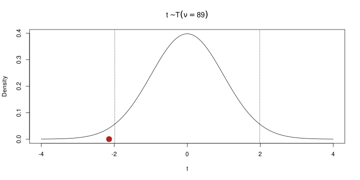
Test a 2 campioni
Ovviamente per fare tutto esistono delle funzioni già predisposte. Ad esempio in R:
Two Sample t-test
data: perc_self_efficacy by education
t = -2.1404, df = 89, p-value = 0.03506
alternative hypothesis: true difference in means between group degree and group high_school is not equal to 0
95 percent confidence interval:
-0.36990164 -0.01374714
sample estimates:
mean in group degree mean in group high_school
3.720976 3.912800 Test a 2 campioni
In questo caso quindi la statistica test è negativa, quindi perc_self_efficacy è maggiore per il campione con high_school.
Inoltre, il p value è minore di \(\alpha\) e quindi, rischiando di sbagliarci con una probabilità \(\alpha\), possiamo rifiutare l’ipotesi \(H_0\) di uguaglianza delle medie delle popolazioni.
In altri termini, se \(H_0\) fosse vera, sarebbe poco probabile (p value) ottenere una differenza tra le medie \(b\) tra i due campioni.
Potenza ed errore di 2 tipo
In questi esempi pratici, abbiamo parlato di errore di primo tipo \(\alpha\), ipotesi nulla e p value. Non abbiamo però fatto riferimento alla potenza (e quindi all’errore di secondo tipo).
Il punto principale è che mentre \(H_0\) possiamo assumerla come assenza dell’effetto (e.g., differenza tra medie). L’ipotesi alternativa, che ci permette di valutare potenza ed errore di secondo tipo, deve essere specificata chiaramente e non solo come maggiore, minore o diverso.
Specificare \(H_1\) però non è semplice per due motivi:
- deve essere fatto a priori ovvero prima di vedere i dati. \(H_1\) deve rappresentare un ipotesi plausibile riguardo la direzione e la grandezza dell’effetto. Se le medie sono diverse (\(H_0\) è falsa), quanto sono diverse?
- per essere specificata richiede conoscenza del fenomeno da esprimere in termini numerici
Effect size
Un ultimo aspetto importante nell’inferenza infatti è il concetto di effect size. L’effect size non è altro che una statistica come le altre ma che viene usata essendo direttamente e “facilmente” interpretabile. Ci sono due tipo di effect size:
- standardizzati: ad esempio il Cohen’s \(d\), correlazione, odds ratio, etc. Sono degli effect size che non dipendono dall’unità di misura originale. A prescindere da cosa sto correlando, una correlazione di 0.5 è interpretata, statisticamente, allo stesso modo.
- non standardizzati: ad esempio la differenza semplice tra due medie. Dal punto di vista prettamente statistico sono preferibili ma non sempre sono intepretabili. Dire che due persone differiscono di 15cm in altezza è chiaro (effetto grande). Dire che due persone differiscono di 4 punti su una scala di depressione è meno chiaro.
Effect size
L’effect size lo abbiamo già introdotto anche se non esplicitamente. Se riprendiamo la statistica test nel caso dei due campioni:
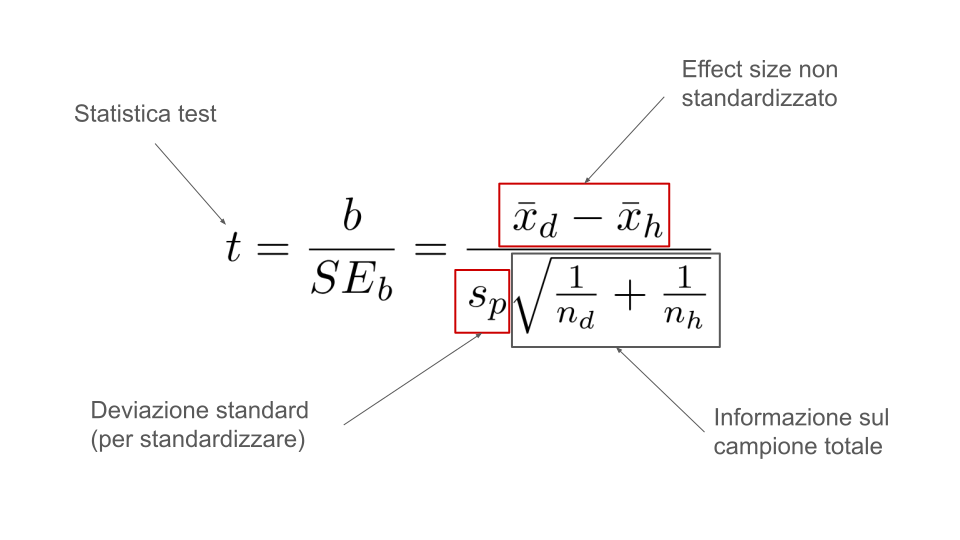
Effect size
Quindi, il numeratore \(b\) è un effect size non standardizzato perchè ci dice la differenza tra le due medie sulla scala della variabile. Può essere utile, se è chiaro come intepretarlo.
L’informazione sul campione non ci serve perchè l’effect size deve dirci una caratteristica del fenomeno e non la sua precisione di stima.
La deviazione standard (pooled) è una stima di quanto le due popolazioni variano. Quindi possiamo rapportare \(b\) a \(s_p\) per standardizzare la differenza tra medie grezza in base a quanto variano. E’ la stessa logica di un punto \(z\).
Effect size
In formula possiamo calcolare questo effect size, chiamiamolo \(d\):
\[ d = \frac{b}{s_p} \]
In pratica ci dice quanto separati sono i due gruppi (e quanto le popolazioni in termini di stima) in unità di deviazione standard.
Possiamo anche ricavarlo dalla statistica \(t\):
\[ d = t \sqrt{\frac{1}{n_d} + \frac{1}{n_h}} \]
Effect size, Cohen’s \(d\)
Questo effect size si chiama comunemente Cohen’s \(d\) (o differenza tra medie standardizzate). E viene definito a livello della popolazione come:
\[ \delta = \frac{\mu_1 - \mu_0}{\sigma} \]
Ovvero differenza tra medie standardizzata per la deviazione standard. Ci sono vari modi di calcolarlo, in particolare per stimare \(\sigma\). Il caso di \(s_p\) è uno dei vari modi ma la logica è sempre la stessa.
Effect size, Cohen’s \(d\)
Proviamo a calcolarlo in R sul t-test che abbiamo fatto prima. Possiamo usare il pacchetto effectsize:
Cohen's d | 95% CI
--------------------------
-0.45 | [-0.87, -0.03]
- Estimated using pooled SD.Quindi i due gruppi hanno una differenza di 0.45 deviazioni standard.
Cohen’s \(d\)
Anche se standardizzato, questo effect size non è facilmente interpretabile come una correlazione (tra -1 e 1). Ci sono dei benchmark che possono essere utili:
- La differenza di altezza media tra maschi e femmine in Olanda è di 13cm o Cohen’s \(d = 2\) (Schönbeck et al., 2012)1
- Ci sono delle stime degli effect size medi in Psicologia attorno a 0.4 (Richard et al., 2003)
Queste sono solo indicazioni generali, ogni ambito di ricerca può avere degli effetti plausibili. Ovviamente diffidate degli effetti troppo ottimisti, sono poco plausibili.
Effect size e potenza
Torniamo alla nostra visualizzazione interattiva, nella sezione standardizzata:
https://stat-teaching.github.io/statshiny/shiny/inference.html
Effect size e potenza
Se noi standardizziamo e quindi esprimiamo le nostre distribuzioni campionarie in termini di Cohen’s \(d\) ci rendiamo conto che \(\delta\) (a livello della popolazione) è il livello di separazione delle due ipotesi.
In altri termini, la potenza è una funzione matematica che dipende da:
- \(\alpha\)
- la numerosità campionaria \(n\)
- il grado di separazione delle due ipotesi, riassumibile in modo standardizzato con \(\delta\)
Ovviamente \(\delta\) è a sua volta funzione di \(b\) (effetto grezzo) e \(\sigma\).
Effect size e potenza
Bibliografia
Di Marco, G., Hichy, Z., & Sciacca, F. (2020). Dataset on the relationship between psychosocial resources of volunteers and their quality of life. Data in Brief, 30, 105522. https://doi.org/10.1016/j.dib.2020.105522
Gigerenzer, G. (1993). The Superego, the Ego, and the Id in Statistical Reasoning. In A Handbook for Data Analysis in the Behaviorial Sciences. Psychology Press. https://doi.org/10.4324/9781315799582
Gigerenzer, G. (2018). Statistical rituals: The replication delusion and how we got there. Advances in Methods and Practices in Psychological Science, 1, 198–218. https://doi.org/10.1177/2515245918771329
Richard, F. D., Bond, C. F., Jr, & Stokes-Zoota, J. J. (2003). One hundred years of social psychology quantitatively described. Review of General Psychology: Journal of Division 1, of the American Psychological Association, 7, 331–363. https://doi.org/10.1037/1089-2680.7.4.331
Schönbeck, Y., Talma, H., Dommelen, P. van, Bakker, B., Buitendijk, S. E., HiraSing, R. A., & Buuren, S. van. (2012). The world’s tallest nation has stopped growing taller: the height of Dutch children from 1955 to 2009. Pediatric Research, 73, 371–377. https://doi.org/10.1038/pr.2012.189